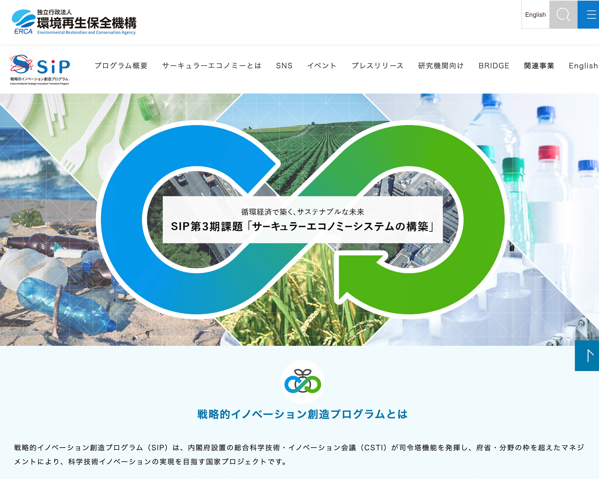

【実務実績】独立行政法人環境再生保全機構 環境研究総合推進部 SIP推進課 様

環境再生保全機構が実施する「サーキュラーエコノミー推進プログラム（SIP）」に関する情報発信を目的に制作。公募情報の提供や、制度の概要・研究推進に関する各種資料の周知を中心に、研究者や関係者が円滑に情報収集・活用できる構成が求められた。
独立行政法人環境再生保全機構 環境研究総合推進部 SIP推進課／2024.10
URL
目的
ユーザーの利用促進／活動の周知
ターゲット
一般、行政、関連企業
デザインコンセプト
プログラムの専用サイトとして、「機構の業務紹介の一部」ではなく、独立したプロジェクトを意識し、循環型社会（サーキュラーエコノミー）を想起させるメインビジュアルを制作。訪問者の主な目的が「公募情報の確認」や「関連書類の取得」であることから、わかりやすいナビゲーションと視認性の高い情報整理を重視しました。
担当
デザイン／クライアントとの連携
期間
| デザインカンプ | ：1ヶ月：初校〜3校（figma） |
|---|---|
| アクセシビリティ試験後の修正 | ：1週間（デザイン部分） |